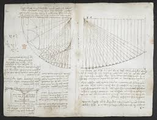

Diamond Sutra
MS 868 | Woodblock PrintDünyanın bilinen en eski tarihli, tam ve basılı kitabıdır. Matbaa teknolojisinin Asya'daki gelişiminin en kıymetli tanığıdır.
Bilgi ve Belge Yönetimi Semantik Web Projesi | HTML - XML - RDF - JS
Dünyanın bilinen en eski tarihli, tam ve basılı kitabıdır. Matbaa teknolojisinin Asya'daki gelişiminin en kıymetli tanığıdır.
Kralın yetkilerini sınırlayarak modern demokrasinin temelini atmıştır. Hukuk tarihinin en önemli köşe taşlarından biridir.

Leonardo da Vinci'nin bilimsel not defteridir. Ünlü "ayna yazısı" ile tutulmuş notlarını ve detaylı çizimlerini içerir.

Anglo-Sakson edebiyatının en önemli destanıdır. Kahraman Beowulf'un canavarlarla olan efsanevi mücadelesini anlatır.

Erken Orta Çağ'ın en süslü el yazması dini metnidir. Kelt ve Roma sanat stillerini birleştiren dev bir hazinedir.

Avrupa'da hareketli harflerle basılan ilk kitaptır. Bilgiye erişimde devrim yaratarak modern dünyayı başlatmıştır.

William Shakespeare'in oyunlarının toplandığı ilk baskıdır. Dünya edebiyat tarihinin en prestijli kitaplarından biridir.

Dünyanın en eski tam İncil nüshalarından biridir. Metin eleştirisi ve teoloji için paha biçilemez bir kaynak niteliğindedir.

Arthur Conan Doyle'un orijinal el yazısı notlarını içerir. Ünlü dedektifin hikayelerinin mutfağına ışık tutmaktadır.

Lennon ve McCartney'nin el yazısı şarkı sözü taslaklarıdır. Modern arşivciliğin kapsamını sergileyen eşsiz belgelerdir.